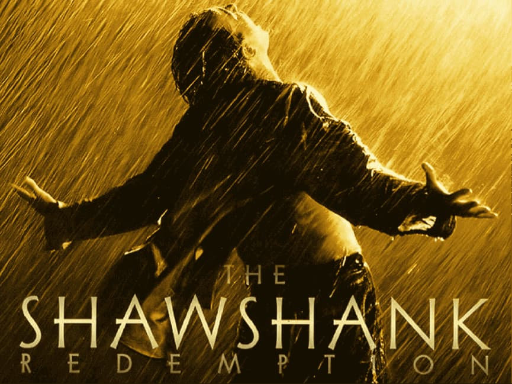

Netflix 上 8 部必看经典电影

在信息泛滥的今天，影评文章铺天盖地，却大多停留在表面。真正的经典，却如同深海，每一次重温，都能发现新的宝藏，引人放慢脚步，细细品味其中蕴含的哲思与人性。
那些历经数十年依然感动人心的电影，早已超越了单纯的娱乐，成为人类共同的精神财富。这些作品不仅仅是故事的载体，更是思想的结晶，承载着创作者对生命、死亡、爱情、信仰的深刻思考。
因此，我选择深入探讨几部我最爱的经典作品，进行深入分析，希望能与那些同样深受其感动的读者产生共鸣。所有这些作品现在都可以在Netflix上观看，或者曾经在Netflix上观看过。如果某部作品不再在Netflix上线，我会提供其他观看方式。
《教父》：权力与家庭
推荐指数： ⭐⭐⭐⭐⭐
Netflix 可在以下国家/地区使用： 德国、印度、意大利、韩国等
烂番茄： 98% | IMDb评分： 9.2/10
如果说黑帮电影有一部难以逾越的巅峰，那非《教父》莫属。影片以科里昂家族为中心，以冷静而沉重的基调，捕捉权力、家族与人性之间错综复杂的互动。影片跨越一代人，反映了美国社会的变迁和黑社会的演变。
影片最吸引我的有两个方面。首先是结尾那段传奇的蒙太奇——迈克尔的洗礼誓言与他下令的残酷暗杀交织在一起。神圣与世俗的碰撞，造就了电影中最令人难忘的片段之一。
第二点是科波拉拒绝给予观众"上帝视角"。影片从未通过旁白或强行对话来灌输角色的动机。相反，这种克制将叙事提升到了一个新的艺术高度。
《教父》远不止是一个暴力黑帮的故事，它深刻探讨了权力、家庭和道德之间不可调和的冲突。在这个资本主义寓言中，每个人都是受害者，也是施暴者——这恰恰反映了人性最真实的复杂性。
导演： 弗朗西斯·福特·科波拉
主演： 马龙·白兰度、阿尔·帕西诺、詹姆斯·凯恩、罗伯特·杜瓦尔、黛安·基顿
年份： 1972
类型： 犯罪，剧情
《还有明天》：叛乱与解放
推荐指数： ⭐⭐⭐⭐⭐
Netflix 上线国家： 法国、瑞士
IMDb评分： 7.7/10
《教父》虽然被誉为影史上不朽的经典，但其浓重的父权色彩近年来引发了越来越多的争议。正因如此，我想在这里推荐一部截然不同的作品 —— 保拉·科特莱西的导演处女作《还有明天》(C'è ancora domani)。
这部黑白电影以女性视角讲述了 1946 年一位普通罗马家庭主妇的觉醒。它在意大利成为票房奇迹，横扫六项大卫·迪·多纳泰罗奖，并以温柔而有力的方式讲述了一个关于尊严、勇气和女性自主的永恒故事。
这部电影的非凡之处在于其对女权主义微妙而不说教的解读。科特莱西精准地捕捉了女性心理的细微之处。主人公迪莉娅并非完美无瑕的女英雄，而是一个犹豫、恐惧、挣扎的女性——这让她的人生旅程更加真实。
影片以意大利首次全民公投和女性首次获得投票权的罗马为背景，既有政治色彩，也有个人色彩。当迪莉娅凝视着镜中的自己时，她的眼中闪烁着难以言喻的光芒——那一刻，她对既定秩序提出了质疑。
尽管根植于战后的意大利，但它所引发的问题——家庭暴力、教育不平等、经济依赖——至今仍以不同的形式存在。科特莱西如同一面历史的镜子，映照着我们的当下。而当迪莉娅最终投下她的一票时，这不仅是1946年意大利女性的胜利，更是对所有持续为平等而奋斗的女性的致敬。
导演： 保拉·科特莱西
主演： 保拉·科尔特莱西 / 瓦伦蒂诺·洛伦佐 / 罗米娜·布拉科尼
年份： 2023
类型： 剧情， 历史
《美丽人生》：爱情与战争
推荐指数： ⭐⭐⭐⭐⭐
Netflix 可在意大利、德国、法国和其他欧洲地区使用
烂番茄： 96% | IMDb评分： 8.6/10
罗伯托·贝尼尼的《美丽人生》至今仍是电影史上最具争议的杰作之一。影片以纳粹大屠杀为背景，大胆地以喜剧的视角探讨人类最黑暗的篇章。
影片讲述了年轻的意大利犹太人圭多和学校老师朵拉的故事，从他们天马行空的爱情故事，到二战阴影下的家庭生活。影片的前半部分轻松诙谐，展现了圭多的魅力如何赢得朵拉的芳心。然而，随着纳粹掌权，故事却戏剧性地演变成悲剧。
《美丽人生》的核心是对想象力救赎力量的赞颂。面对恐惧，圭多为儿子创造了一个平行世界——一个用纯真和希望守护他的幻象。这种想象并非逃避现实，而是对现实最高形式的反抗。
影片将喜剧与悲剧巧妙融合，传递出温柔而深刻的讯息，展现了坚韧不拔的精神和爱的力量。当一切武器都被剥夺，当抵抗似乎徒劳无功时，爱便成为最后的堡垒。正如片名所示，即使在最黑暗的时刻，生活依然可以因爱而"美丽"。
导演： 罗伯托·贝尼尼
主演： 罗伯托·贝尼尼 / 尼科莱塔·布拉斯基 / 乔治·坎塔里尼
年份： 1997
类型： 剧情， 爱情， 战争
《本杰明·巴顿奇事》：时间与生命
推荐指数： ⭐⭐⭐⭐
Netflix 上线国家： 德国、韩国、加拿大等
烂番茄： 80% | IMDb评分： 7.6/10
说到布拉德·皮特，除了他与詹妮弗·安妮斯顿和安吉丽娜·朱莉的爱情故事之外，一部真正定义他演艺生涯的电影是《本杰明·巴顿奇事》。这部杰作让他从好莱坞万人迷一跃成为一位真正的演员，奠定了他在影坛巨星中的地位。
导演大卫·芬奇以其标志性的精准，将这个近乎童话般的故事，转化为既沉重又充满诗意的故事。新奥尔良的街道、战争的灰烬、岁月的阴影——在他的导演下，一切都呈现出令人难忘的历史质感。
触动观众的不仅仅是"逆龄"的新颖性，更在于其设定如何映射出人类普遍的挣扎。时间在本雅明的人生中倒流，却迫使我们重新思考时间本身的意义。爱情，因年龄的差异而变得更加纯粹。死亡，被提前，让每一次相遇都显得更加珍贵。
虽然概念超现实，但它传达的情感却深刻地体现了人性。每位观众都能在本杰明的旅程中看到自己——我们对时间的执着，对爱的渴望，对死亡的恐惧，以及对意义的追寻。影片包裹在奇幻之中，其核心却深刻而真实。
观影小贴士：
这部电影最适合静静地欣赏。它节奏缓慢，让每一帧画面都充满呼吸，邀请你完全沉浸在奇异而美丽的世界中。这部电影值得反复观看;每一次观看都能带来新的层次和感悟。
导演： 大卫·芬奇
演员： 布拉德·皮特、凯特·布兰切特
年份： 2008
类型： 戏剧， 幻想， 浪漫
《肖申克的救赎》：自由与希望
推荐指数： ⭐⭐⭐⭐⭐
Netflix 在以下国家/地区上线： 意大利、法国、荷兰、波兰等
烂番茄： 98% | IMDb评分： 9.3/10
《肖申克的救赎》被广泛认为是电影史上最伟大的电影之一，多年来一直位居IMDb排行榜榜首。它是一部关于希望、自由、控制系统和精神救赎的深刻寓言。
这部电影由弗兰克·德拉邦特执导，以冷静内敛的叙事风格，探讨了监狱高墙内人性的挣扎。尽管上映时票房表现不佳，但它已成为一部永恒的杰作，受到全球观众的推崇，被视为精神力量的源泉。
这部电影的核心是对希望与自由的颂扬。在肖申克监狱，时间是最锋利的利刃——它磨平个性，侵蚀对自由的渴望。许多人，像布鲁克斯一样，已经习惯了这个体制，以至于失去了超越它生活的勇气。
"制度化"并非只存在于监狱;它代表着任何抹杀个性的强大秩序。或许我们都生活在无形的肖申克监狱里，误以为那是人生的界限。安迪的故事提醒我们，要保留一些未被肖申克触及的东西——一本书、一首音乐，或者一个不可动摇的信念。
导演： 弗兰克·德拉邦特
主演： 蒂姆·罗宾斯、摩根·弗里曼
年份： 1994
类型： 剧情、犯罪
《超脱》：孤独与教育
推荐指数： ⭐⭐⭐
Netflix 上可用： 不再可用(目前在 Amazon Prime Video 和 Apple TV 上可用)
烂番茄： 74% | IMDb评分： 7.7/10
《超脱》是对美国教育体系的尖锐批判，阿德里安·布罗迪饰演亨利，一位应对问题学校严酷现实的代课老师，其表演令人难忘。
影片以直白而坚定的摄影手法，捕捉了学生们的反抗与迷失，以及教师们在体制压力下的疲惫与坚韧。它不仅仅是一部关于教育的电影，更是对更广泛社会问题的深刻反思。
影片最令人产生共鸣的，是对人性的细腻刻画。每个角色都隐藏着挣扎和赤裸裸的情感冲突。亨利虽然表面上冷漠，但他深切地关怀着边缘学生，用自己默默的方式努力拯救他们迷失的灵魂。
《超脱》以其直白的现实主义和深刻的情感，迫使观众重新思考教育的意义以及我们共同承担的社会责任。布罗迪的精彩表演，加上导演托尼·凯耶的执着视角，成就了这部既发人深省又充满人性的电影。
导演： 托尼·凯耶
主演： 阿德里安·布洛迪、克里斯蒂娜·亨德里克斯、马西娅·盖伊·哈登、刘玉玲、詹姆斯·凯恩
年份： 2011
类型： 戏剧、教育、社会现实主义
《三角关系》：命运与轮回
推荐指数： ⭐⭐⭐⭐⭐
Netflix 上可用： 不可用(目前在 Prime Video 和 Disney+ 上可用)
IMDb评分： 6.9/10
《三角》是一部精彩绝伦的时间循环惊悚小说，其核心在于近乎完美的逻辑悖论。就像画一个圆——你清晰地看到起点，但圆一完成，就再也找不到起点了。
影片以一艘神秘的远洋客轮为背景，通过层层悬念营造出一个令人窒息的封闭世界。导演克里斯托弗·史密斯巧妙地构建叙事结构，每一次循环都揭示新的真相，带来新的震撼。
梅丽莎·乔治扣人心弦的表演，将角色的绝望、坚韧和变幻的情绪展现得淋漓尽致，使每一次重复都显得独具特色。影片将西西弗斯的神话融入现代心理惊悚片，探讨了关于命运、救赎和永恒轮回的深刻问题。
导演： 克里斯托弗·史密斯
主演： 梅丽莎·乔治、利亚姆·海姆斯沃斯
年份： 2009
类型： 神秘、恐怖、惊悚
《罗生门》：真理与人性
推荐指数： ⭐⭐⭐⭐
Netflix 上线国家： 日本
烂番茄： 98% | IMDb评分： 8.1/10
黑泽明的《罗生门》是一部永恒的杰作，它通过四个相互矛盾的匪帮杀人故事，探讨了真相的相对性和人性的复杂性。这部作品不仅展现了日本电影的艺术巅峰，还引入了"罗生门效应"这一影响深远的叙事概念。
影片通过呈现同一事件的多个版本，揭示了个体如何基于自身视角和个人利益重构记忆。黑泽明对光影和摄影技巧的娴熟运用，赋予每个叙述以可信度，同时也揭露了其中的矛盾之处。
《罗生门》以其突破性的叙事结构和震撼人心的摄影，挑战观众去思考"真相"的真正含义。即使在今天，这部1950年的经典作品仍具有当代意义，提醒我们——尤其是在信息过载的时代——批判性地思考现实的本质。
导演： 黑泽明
主演： 三船敏郎、京真智子、森雅之
年代： 1950 年
类型： 剧情、悬疑
结论
电影被称为第七艺术，因为它不仅记录了一个时代，更反映了人类的灵魂。超越语言和国界的经典作品不仅仅是故事，更是揭示人类最深切的渴望、孤独和希望的镜子。艺术的真正力量在于，即使在最黑暗的时代，它也能让我们瞥见光明。
如今，发现这些人类精神的宝藏已不再需要费力寻觅。Netflix、HBO 和Disney+等平台汇集了无数经典影片，而 环球巴士 则让这些影片比以往任何时候都更容易获取。用更少的钱，你就能拥有更广阔的电影世界——让艺术和故事在你的日常生活中扎根。
不要让这些经典与你擦肩而过，与 环球巴士 一起开启你的观影之旅，让杰作在流动的光影中继续陪伴你。
除了经典电影之外，我还整理了几份 Netflix 推荐列表，例如Netflix 上 15 部最佳惊悚片和Netflix 喜剧精选，以帮助你发现更多必看的精彩影片。
常问问题
Netflix 有没有什么老经典电影？
是的，Netflix 上有很多值得一看的经典老片，包括《教父》、《美丽人生》、《肖申克的救赎》和《本杰明·巴顿奇事》。Netflix 的上线时间因地区而异，但使用 VPN，你可以从全球不同的 Netflix 库访问这些经典影片。
每个人都应该看的经典电影是什么？
每个人都应该看的经典电影是《肖申克的救赎》。这是一个关于希望与自由的永恒故事，跨越几代人，引发共鸣。其他必看的电影包括《教父》和《美丽人生》，它们反映了人类坚韧不拔的毅力、爱以及叙事的持久力量。
当你无法决定时该看什么电影？
当你不知该看什么时，不妨看看那些永恒的经典，比如《肖申克的救赎》 ——它能给你希望;《教父》 ——它能给你戏剧性;《美丽人生》——它能给你温暖。这些电影从不让人失望，也提醒我们，为什么经典电影在犹豫不决时仍然是最安全的选择。